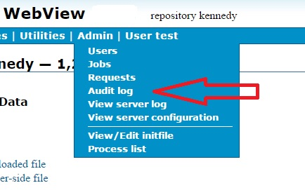
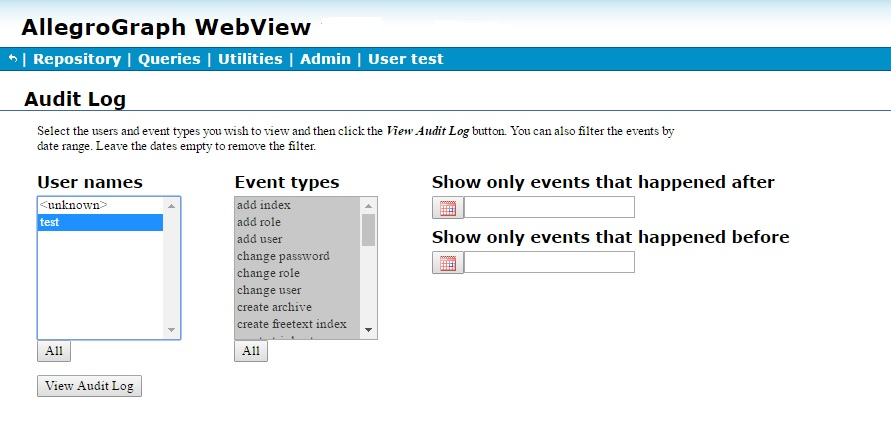
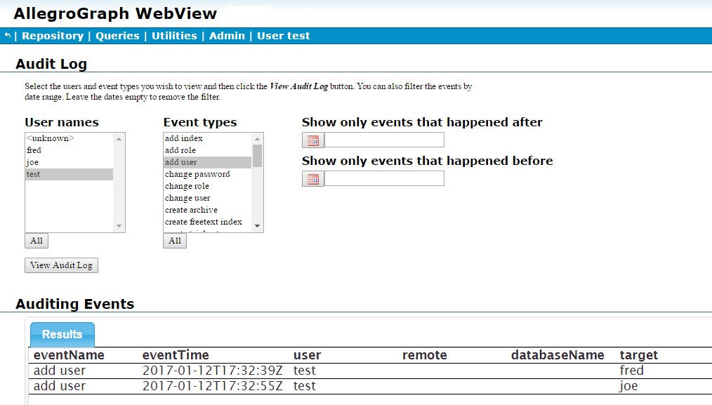
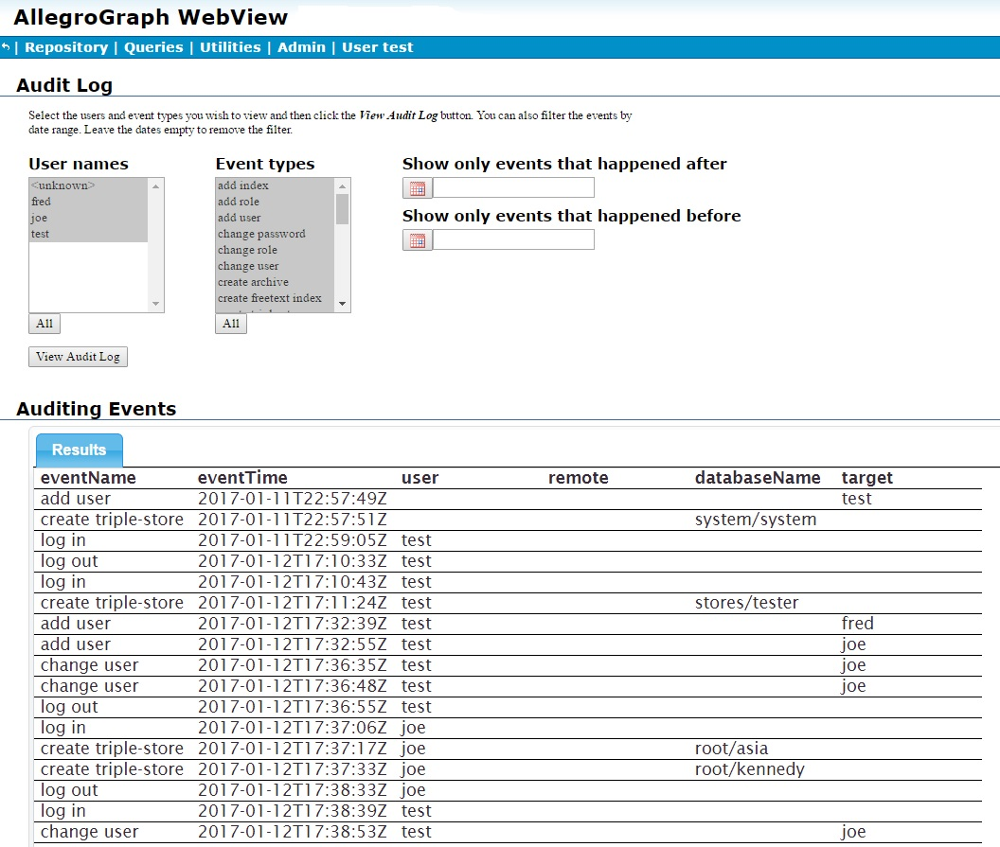
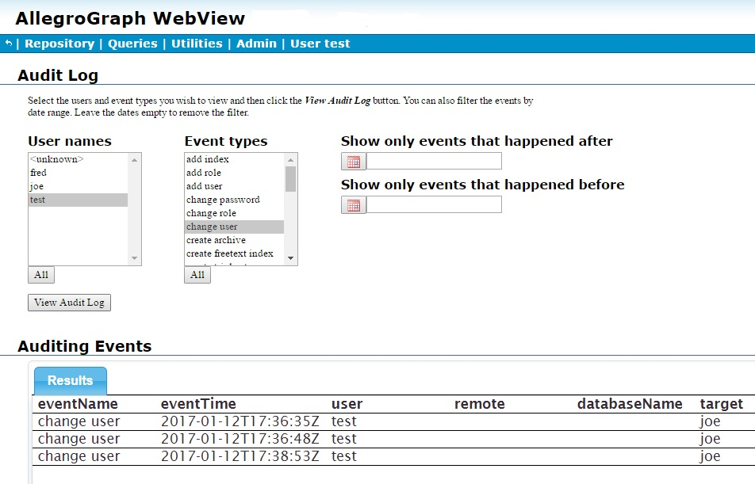

Introduction
AllegroGraph always provides an unstructured log of system activity. This is mainly for debugging and to aid in technical support. AllegroGraph also provides a structured system audit log which tracks important changes to the server and its triple-stores. This log is useful for system and database administrators conscious of security and performance.
Enabling auditing
Logging will only be performed if auditing is enabled when the AllegroGraph server is started. It is not possible to start logging in a running server started without auditing enabled.
To enable auditing, add this line to the AllegroGraph configuration file:
Auditing yes The AllegroGraph configuration file and the various configuration options are discussed in the server configuration document.
When auditing is enabled, when certain events occur (see below), statements will be added to the system:system repository (i.e., the repository named system in the catalog named system). This repository is created automatically if it does not exist at the time an audit event is logged.
Auditing event types
Here are the audit event types:
addIndex
addRole
addUser
changePassword
changeRole
changeUser
createArchive
createFreeTextIndex
createTripleStore
deleteDuplicateTriples
deleteRole
deleteTripleStore
deleteUser
disableAccount
dropFreeTextIndex
dropIndex
enableAccount
expirePassword
failedLogin
logIn
logOut
logOutWithTimeout
modifyRole
optimizeIndices
restoreArchive
setBulkMode
suspendAccount
unsuspendAccount The list of audit event types can be obtained via the REST interface:
GET /auditLog/eventTypes The events are also listed on the Audit Log Page in WebView, as shown in the WebView section below. The events are listed by their labels, like "add user". To get the event name, remove the spaces and capitalize every word except the first (so addUser).
Security
Regardless of the security settings, only superusers have access to the system:system repository.
Superuser access and permissions
Superusers can modify the access rights to repositories and permissions of any user, including themselves. However, superusers may not have access rights or permissions initially (depending on the value of the SuperUserCanAccessAllData configuration option described in Server Configuration and Control). Any access or permission change is recorded if auditing is enabled. Therefore, the fact that a superuser granted him/herself permissions and rights will be discoverable when auditing is enabled, assuming SuperUserCanAccessAllData was set to no in the configuration file.
Audit email notifications
AllegroGraph provides a flexible interface to cause email notifications of auditable events to be sent to designated email addresses. The email addresses must be specified in the AllegroGraph configuration file. Auditing must be enabled (Auditing yes must appear in the configuration file) for emails to be sent. The AllegroGraph configuration file and the various configuration options are discussed in the server configuration document.
In order to have email notifications sent, you must define one or more SMTP hosts with entries like the following in the configuration file (see the server configuration document):
SMTPHost gmail \
server="smtp.gmail.com", ssl=true, starttls=false,\
from="me@gmail.com", login="me@gmail.com", \
password="somepassword" That defines the gmail SMTP host. Now, add as many AuditEventsToEmail entries as you wish:
AuditEventsToEmail to="agadmin@gmail.com", smtphost="gmail", \
events="expirePassword,addUser,deleteUser" We list three audit events which will trigger emails to agadmin@gmail.com (expirePassword, addUser, and deleteUser), but the list can contain any audit events (see above for a list of audit events). Note the SMTP host is specified by the name it is given (gamil in this case). If there is only one SMTPHost defined, it can be left out of the AuditEventsToEmail entry:
AuditEventsToEmail to="agadmin@gmail.com", \
events="expirePassword,addUser,deleteUser"
Web Interface
AllegroGraph's AGWebView tool provides an interface to query the audit information; see the AGWebView documentation for information on AGWebView. The WebView auditing is described next (this description is repeated in the AGWebView document).
You can use the AG WebView interface to examine auditing information. Only superusers can look at the auditing information. There is an Audit log entry on the Admin menu on the WebView menu bar, as shown in the illustration:

If selected, the following page is displayed:

No information is displayed because we have not requested any (and, in fact, the page was displayed immediately after a fresh startup so there is no information to display).
After we have, as superuser test, added two users (fred and joe), the updated page (looking at actions by test, as test is selected, and event add user) shows when those users were added and by whom. Information is refreshed when the View Audit Log button is clicked.

The multi-item widgets User names and Event types allow you to filter audit log entries by user and event type. Multiple items can be selected from each list. Clicking All under each list selects all items. The standard combinations of mouse clicks and the Control and Shift keys can be used to select individual or groups of items.
The two date boxes to the right allow restricting displayed log entries to a range of dates.
Next user joe creates and deletes a repository asia and creates a repository kennedy, to which he adds a bunch of triples, and test (the superuser) modifies joe's user permissions several times. Here are screens after that activity, the first showing all activity and the second just the change user activity of test. Again, clicking View Audit Log clears the currently displayed information and displays information based on the selections in the various lists and boxes.


User joe did add triples to the kennedy repository, but the audit log does not record adding and deleting triples so that activity is not shown.
HTTP interface
See HTTP Protocol - SPARQL Endpoint for information on AllegroGraph's HTTP interface. The interface for getting audit log information is here in that document and is repeated (for convenience) just below.
GET /auditLog
Returns entries from the audit log which match the given parameters.
This service takes the following parameters:
startDate- An untyped literal in
xsd:dateTimeformat. For example,"2014-02-23T00:00:00Z". This can be used to select only events which occurred on or after this date and time. See the date-time section of Datatypes for information on the date-time format. endDate- An untyped literal in
xsd:dateTimeformat. For example,"2014-02-23T00:00:00Z". This can be used to select only events which occurred on or before this date and time. See the date-time section of Datatypes for information on the date-time format. users- A comma-separated list of user ids or the special value
UNKNOWN. Only events triggered by the specified users are included in the results.UNKNOWNmatches entries for which the acting user is not recorded which includes some automatic system actions and failed logins. events- A comma-separated list of event type classes as returned by auditLog/eventTypes. Only events whose type is among the members of the list are included in the results.
limit- An integer. This can be used to limit the amount of results returned by the query.
offset- An integer. This can be used to skip the first
offsetresults in result set.
If a parameter is not specified then no restriction is imposed on the corresponding component of the audit log entires.
The columns of results are:
eventName- The name of event. This is one of the labels returned by eventTypes.
eventTime- The date and time of the event. Must be an untyped literal in xsd:dateTime format, for example,
"2014-02-23T00:00:01Z"( equals February 23, 2014, one second after midnight, Greenwich Mean Time). See the date-time section of Datatypes for information on the date-time format. user- The user who triggered the event. This is unbound if the user is not known, and so no information about the user will be returned.
remote- The IP address and the port from where the request which triggered the event was sent. For example,
192.168.1.1:43420. databaseName- If the event is associated with a store then this value identifies it in the format of
<catalog-name>/<repository-name>. For stores in the root catalog, the<catalog-name>isroot. target- For
addIndexanddropIndexevents, this is the name of the index. ForaddUser,changePassword,deleteUserandfailedLoginevents, this is the user id of the affected user.
The results are sorted by eventTime. The format of the results can be controlled with the Accept header.
GET /auditLog/eventTypes
Returns the event classes and their labels. Classes can be passed in the events parameter of auditLog to restrict the types of events in the results.
The format of the results can be controlled with the Accept header.
HTTP audit interface example
Here is an example where we use curl to get audit information.
curl -u test:xyzzy -X GET http://localhost:10035/auditLog
The information returned uses the application/sparql-results+xml format which is the default for SPARQL results (audit requests are implemented internally as SPARQL queries). Note that some events have no user information as the user is not known for them.
$ curl -u test:xyzzy -X GET http://localhost:10035/auditLog
<?xml version="1.0"?>
<!-- Generated by AllegroGraph 4.14 -->
<sparql xmlns="http://www.w3.org/2005/sparql-results#">
<head>
<variable name="eventName"/>
<variable name="eventTime"/>
<variable name="user"/>
<variable name="remote"/>
<variable name="databaseName"/>
<variable name="target"/>
</head>
<results>
<result>
<binding name="eventName">
<literal>add user</literal>
</binding>
<binding name="eventTime">
<literal datatype="http://www.w3.org/2001/XMLSchema#dateTime">2014-03-24T08:05:44Z</literal>
</binding>
<binding name="target">
<literal>test</literal>
</binding>
</result>
<result>
<binding name="eventName">
<literal>create triple-store</literal>
</binding>
<binding name="eventTime">
<literal datatype="http://www.w3.org/2001/XMLSchema#dateTime">2014-03-24T08:05:45Z</literal>
</binding>
<binding name="databaseName">
<literal>system/system</literal>
</binding>
</result>
<result>
<binding name="eventName">
<literal>create triple-store</literal>
</binding>
<binding name="eventTime">
<literal datatype="http://www.w3.org/2001/XMLSchema#dateTime">2014-03-24T08:05:52Z</literal>
</binding>
<binding name="user">
<literal>test</literal>
</binding>
<binding name="databaseName">
<literal>root/xxx</literal>
</binding>
</result>
<result>
<binding name="eventName">
<literal>add index</literal>
</binding>
<binding name="eventTime">
<literal datatype="http://www.w3.org/2001/XMLSchema#dateTime">2014-03-24T08:06:36Z</literal>
</binding>
<binding name="user">
<literal>test</literal>
</binding>
<binding name="databaseName">
<literal>root/xxx</literal>
</binding>
<binding name="target">
<uri>http://franz.com/allegrograph/4.11/audit-log#i</uri>
</binding>
</result>
<result>
<binding name="eventName">
<literal>create freetext index</literal>
</binding>
<binding name="eventTime">
<literal datatype="http://www.w3.org/2001/XMLSchema#dateTime">2014-03-24T08:06:36Z</literal>
</binding>
<binding name="user">
<literal>test</literal>
</binding>
<binding name="databaseName">
<literal>root/xxx</literal>
</binding>
<binding name="target">
<literal>fff</literal>
</binding>
</result>
</results>
</sparql>